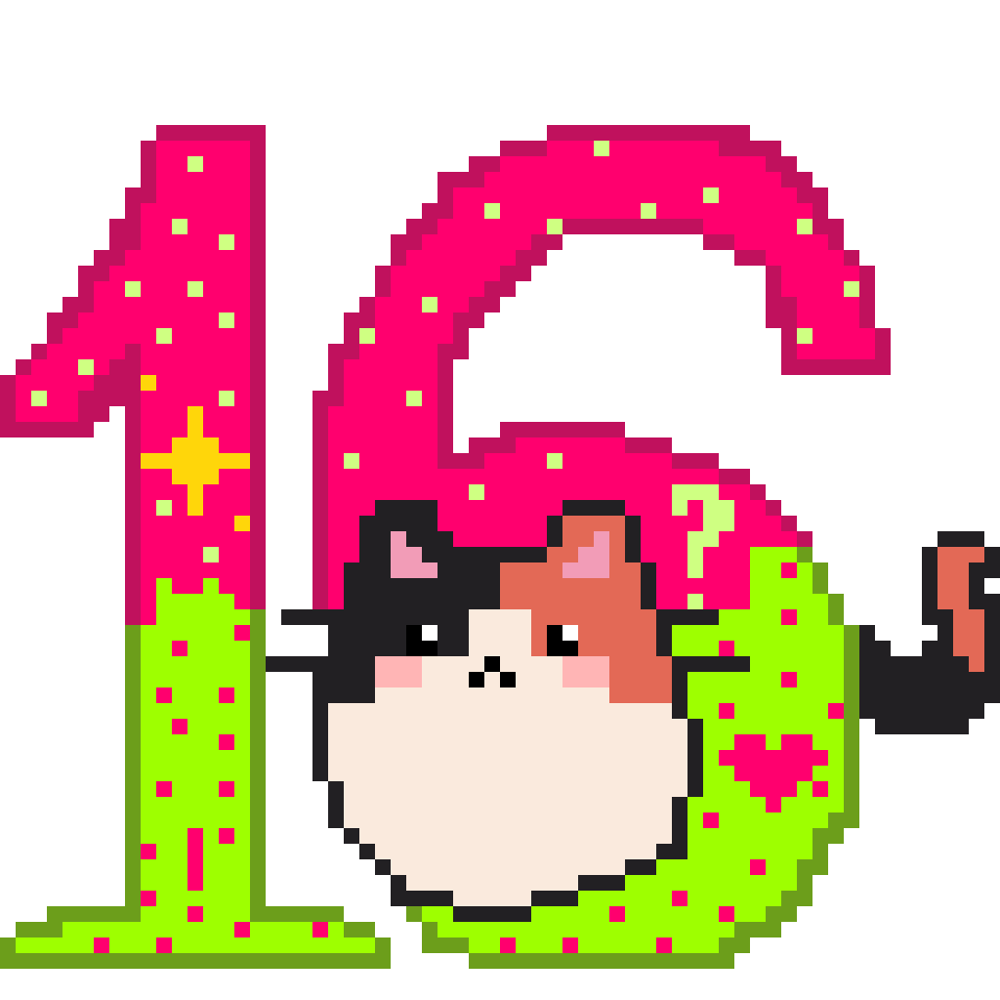
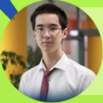
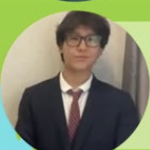
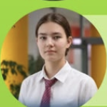
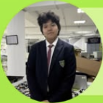
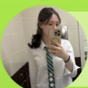
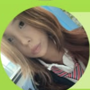
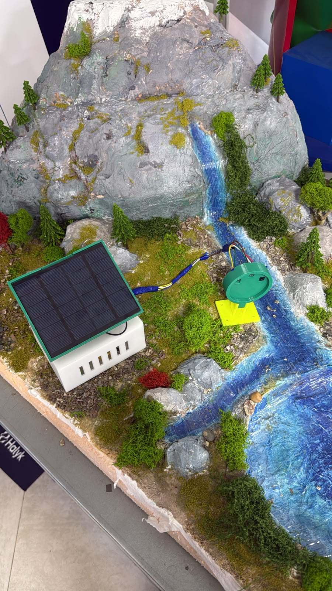

Умная солнечная панель, которая учитывает окружающую среду
Adaptive Polarized-Light Control
for Biodiversity-Aware Solar Tracking

Капитан и программист: код SolarSafe

Архитектор проекта: научные работы и макет

Инженер проекта: электроника и датчики

Билдер: конструкция и сборка

SMM, аутрич и работа с экспертами

SMM, аутрич и работа с экспертами
Многие водные насекомые ищут воду по горизонтально поляризованному свету — так свет отражается от воды.
Подёнки, стрекозы, слепни, ручейники… Гладкие тёмные поверхности, включая солнечные панели, отражают похоже — иногда сильнее, чем сама вода.
Насекомые откладывают яйца на панель — потомство погибает. Биоразнообразие у водоёмов сокращается.
Столько длится взрослая жизнь подёнки. Ошибиться второй раз она не успеет.
Белые сетки на панелях снижают притяжение насекомых в 10–26 раз.
Сетки крадут площадь и выработку, а антибликовые покрытия работают не для всех видов.
Степень поляризации постоянно меняется вместе с движением Солнца.

Уменьшить поляризованное отражение в сторону водоёма и при этом сохранить выработку энергии.
Небольшой поворот панели заметно меняет направление отражённого света при минимальной потере мощности.
Находим угол максимальной мощности — точка сравнения
Измеряем поляризацию отражённого света
Проходим несколько углов, для каждого пишем мощность и поляризацию
Выбираем угол с минимальной поляризацией при допустимой потере мощности
Меряем заново и сравниваем с исходным состоянием
снижение поляризованной экспозиции
потеря мощности
ЭКСПЕРТ
Учитель биологии НИШ высшей категории. Подтвердила: больше всего вреда — утром и вечером, во время лёта подёнок и стрекоз. По её совету BIO-SAFE включается в первую очередь в эти часы.
Честно: сейчас мы измеряем физику света, а не поведение насекомых. Следующий этап — полевые испытания у водоёмов вместе с биологами.
CLEAN ENERGY · SMARTER REFLECTION · SAFER HABITATS